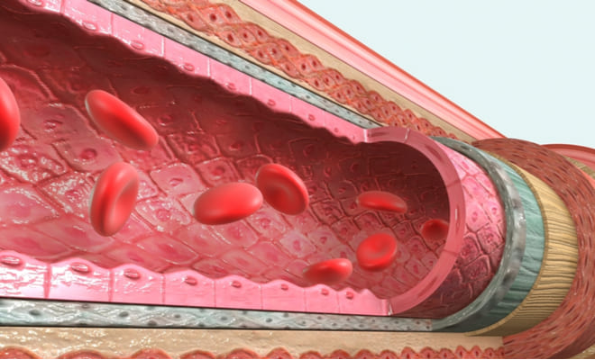

Histología de Aparatos y Sistemas
Aparato Circulatorio
Endotelio Vascular
El endotelio es un epitelio escamoso simple que recubre la superficie interna de vasos sanguíneos y del corazón, formando una barrera semipermeable. Las células endoteliales presentan uniones oclusivas que regulan el paso de sustancias y secretan factores vasoactivos que controlan el tono vascular y la coagulación.
Túnicas de los Vasos Sanguíneos
- Túnica íntima: formada por el endotelio y una capa subendotelial de tejido conectivo laxo con fibras elásticas.
- Túnica media: compuesta principalmente por músculo liso organizado en capas helicoidales, responsables de la contracción y regulación del diámetro vascular.
- Túnica adventicia: tejido conectivo denso con fibras colágenas y elásticas, que brinda soporte estructural y contiene nervios y vasos propios (vasa vasorum).
Variaciones Histológicas según el Tipo de Vaso
- Arterias elásticas: tienen una túnica media rica en fibras elásticas que permiten soportar la presión sistólica elevada, como en la aorta.
- Arterias musculares: predominan las células musculares lisas en la túnica media con menos fibras elásticas, facilitando la regulación del flujo sanguíneo.
- Arteriolas: poseen una o dos capas de músculo liso, regulando la resistencia vascular.
- Capilares: formados por una sola capa de células endoteliales y membrana basal, permiten el intercambio de gases y nutrientes. Existen tipos continuos, fenestrados y discontinuos.
- Vénulas y venas: tienen paredes más delgadas, menos músculo liso y más tejido conectivo; las venas presentan válvulas formadas por pliegues endoteliales para evitar el reflujo sanguíneo.
Histología del Corazón
- Endocardio: revestimiento interno formado por endotelio y tejido conectivo subyacente; en áreas específicas contiene fibras de Purkinje especializadas en conducción eléctrica.
- Miocardio: tejido muscular cardíaco estriado con fibras ramificadas y núcleos centrales, unidas por discos intercalares con desmosomas y uniones GAP que permiten contracción sincronizada.
- Epicardio: capa externa constituida por mesotelio (epitelio plano simple) y tejido conectivo con vasos sanguíneos y nervios.
Células Sanguíneas (Contexto Histológico)
Las células sanguíneas se originan en la médula ósea y presentan características morfológicas específicas: los eritrocitos son anucleados y bicóncavos; los leucocitos contienen núcleo y diferentes tipos celulares según la función inmunitaria; las plaquetas son fragmentos citoplasmáticos esenciales para la coagulación.
Aparato de Sostén
Tejido Óseo
- Matriz extracelular: compuesta por colágeno tipo I y minerales como hidroxiapatita que proporcionan resistencia y dureza.
- Organización estructural: el hueso compacto está formado por osteonas o sistemas de Havers con lagunas que alojan osteocitos conectados por canalículos.
- Células óseas:
- Osteoblastos: células mononucleadas en la superficie ósea que sintetizan la matriz orgánica.
- Osteocitos: células maduras dentro de lagunas, mantienen la matriz ósea y comunican con otras células mediante canalículos.
- Osteoclastos: multinucleados, encargados de la resorción ósea, localizados en lagunas de resorción, derivan de la línea monocítica.
- Periostio y endostio: capas de tejido conectivo que recubren el hueso, contienen células osteoprogenitoras para crecimiento y reparación.
Tejido Cartilaginoso
- Matriz extracelular: abundante en proteoglicanos y colágeno tipo II, aporta resistencia a la compresión y elasticidad.
- Condrocitos: células ubicadas en lagunas dentro de la matriz, responsables de sintetizar y mantener la matriz cartilaginosa.
- Tipos de cartílago:
- Hialino: matriz homogénea con fibras colágenas finas, cubre superficies articulares y forma el esqueleto fetal.
- Elástico: contiene fibras elásticas en la matriz, presente en estructuras flexibles como la oreja y epiglotis.
- Fibrocartílago: matriz con abundantes fibras colágenas tipo I, proporciona resistencia a la tracción en discos intervertebrales y sínfisis púbica.
Ligamentos y Tendones

Los ligamentos y tendones son estructuras de tejido conectivo denso regular que cumplen funciones de unión y transmisión de fuerzas.
- Composición celular: predominan los fibroblastos especializados llamados células tendinosas o ligamentarias, encargadas de sintetizar la matriz extracelular.
- Matriz extracelular: está formada principalmente por fibras de colágeno tipo I, organizadas en fibrillas que se agrupan en fibras y haces paralelos, proporcionando alta resistencia a la tensión.
- Organización estructural: la disposición paralela de las fibras colágenas permite soportar fuerzas unidireccionales; los tendones suelen tener una estructura más ordenada que los ligamentos, que pueden tener fibras entrecruzadas para resistir fuerzas multidireccionales.
- Componentes no fibrilares: incluyen proteoglicanos, glucosaminoglicanos y glucoproteínas que contribuyen a la elasticidad, hidratación y mantenimiento de la matriz.
- Vascularización: relativamente escasa; los tendones poseen zonas avasculares, lo que limita su capacidad de reparación.
- Inervación: abundante en ligamentos, con terminaciones nerviosas para percepción del dolor y propiocepción; los tendones contienen órganos tendinosos de Golgi para monitorear la tensión.
- Diferencias histológicas: los ligamentos presentan fibras colágenas ligeramente menos paralelas y mayor cantidad de fibras elásticas en comparación con los tendones, otorgándoles mayor flexibilidad.